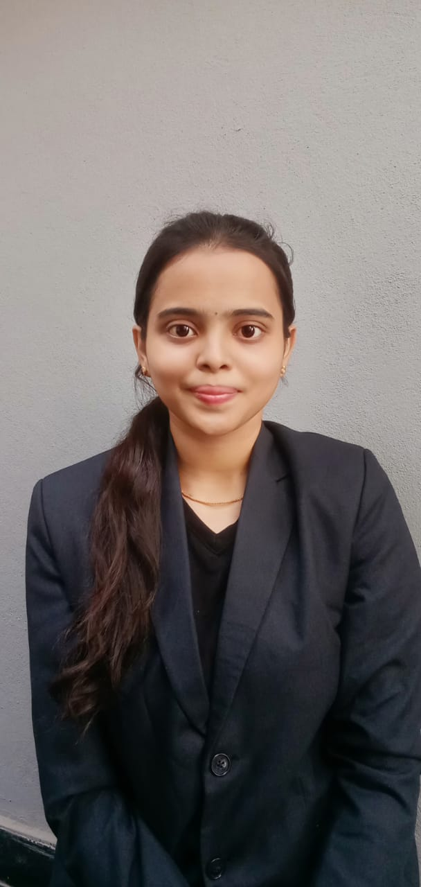

Varshini Thota

Summary
An Aspiring Data Scientist currently pursuing my bachelor's degree at VVISM which is affilated to OU university.
My skill set is a union of both techinical skills and soft skill. Expertise at Data Structures,SQl,python,and Fundamentals of java, HTML.
I have good communication skills and works well in groups. My interpersonal skills helps me to learn new things from others and work together for better outcomes.
I am seeking ooportunities to learn new skills to carve my skill set and to achieve my interests and also to become great help with my effiency for the organization.
Education
- Bacherlor's of Computer Science-VISHWA Vishwa Vishwani Institute of Systems and Mangement
- Intermediate-Trinity Junior College
- SSC-Vasant Valley High School
Skill Set
Techinical Skills:
- Python
- Data Structures
- C-language
- Java
- HTML
- SQL
Soft Skills :
- Problem Solving
- Communication Skills
- Team Work
- Detail oriented
- Interpersonal skills
- Time Management
Certifications
- Digital Training on Microsoft Office 365 Productivity Suite Offerings Beginners Course
offered in partnership with Microsoft on February 25, 2023
- Python Fundamentals for beginners- Great Learning
- Learn SQL with Microsoft SQL Server
on January 30, 2024-Infosys
- Multi Threading in java on January 29,2024-Infosys